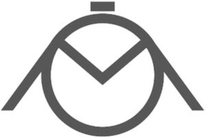

Trade Mark Journal No.2025/017 25 April 2025
WO0000001849394 (14,35)
Office of origin: Switzerland
Date of International Registration:15 January 2025
Date of designation in the UK:
15 January 2025

International priority date claimed: 6 December 2024
(Switzerland)
(823709)
- Class 14
- Timepieces and chronometric instruments; watches; wristwatches; sports watches; watches with an electronic game function; jewelry watches; diving watches; watch parts; watch bands; jewels; precious metals and alloys thereof; cuff links; jewelry boxes; presentation cases for watches; presentation boxes for watches.
- Class 35
- Retail or wholesale services, including online, for smartwatches, connected bracelets (measuring instruments), downloadable computer software applications, application software for mobile phones, access control and alarm monitoring systems, chronographs (time recording apparatus), simulators for sports training, downloadable digital image files authenticated by non-fungible tokens (NFTs), timepieces and chronometric instruments, watches, wristwatches, sports watches, watches with an electronic game function, jewelry watches, diving watches, watch parts, watch bands, jewels, precious metals and their alloys, cuff links, jewelry boxes, cases for watches, presentation boxes for watches; presentation of goods on all communication media, for retail purposes; computerized online ordering services; providing commercial information and advice to consumers regarding choice of goods and services; provision of online marketplaces for buyers and sellers of goods and services; sales promotion for third parties; online advertising on a computer network; promoting the goods and services of others over the Internet; commercial intermediation services; arranging third-party commercial transactions, via online stores.
Mondaine Watch Ltd
Representative: BUGNION S.A., Route de Florissant 10, CH-1206 GENEVE, SWITZERLAND